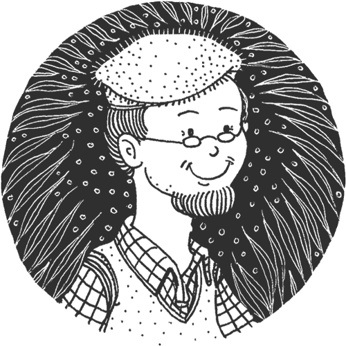

Brand foundations
A wee design system's creative strategy
Mission #
To craft web things that are accessible, user-centred and pretty.
Hi, my name is Pati Montero. I'm a Venezuelan web designer based in Montreal, and this is my design system.

My design system is a living thing, a work in progress. To me, it's a learning tool, as well as a way to define my brand. It covers three sections:
- Brand foundations. Related to the strategy behind the work I do for the web.
- Style guide. About my logo, colour palette and typography.
- Components. Of the pieces I use to communicate and the way of handling them.
Why do I need a design system?
- To learn. The best way to understand something is to do it by myself.
- To remember. I'm prone to neglect some of the reasoning behind my design process.
- To optimize. It'll be a reference for all my design work.
Values #
These are the thoughts that guide my professional adventures.
Openness
I've recently embraced accessibility, and it soon adhered to my core beliefs as a designer. I hope that everyone feels welcome regardless of their abilities and technical situation.
Ecofriendliness
As I learn to code, I'm working towards the adoption of ecodesign best practices. I wish to reduce as much as possible the environmental impact of my web projects.
Inventiveness
Something is always going on in my sketchbook. Whether it's an illustration or a web design project, I keep my mind busy with creativity.
Audience #
Although this design system is open to anyone, I'm building it having creative people in mind. It may be useful for web designers, developers and user experience designers.
To keep this exercise focused, I've created these personas:
- A boss, who would drive me to develop and explain my process.
- A client, to help me understand my audience and their needs.
- A coworker, to remind me that I'm not the only user of the system.
Élise, a boss #
“As a director of marketing, I want to hire a UX designer so that my team can develop user-centred websites.”
Élise was born in Quebec City. She's 43-years-old, married and has two kids. She's the director of the marketing department at a public institution in Montreal. She speaks French and English very well.
Ambitious, independent and logical, Élise is an extrovert. She has a master's degree in marketing and business management. As a boss, she trusts her employees and knows how to take advantage of their strengths.
She's skilled with technology and prefers surfing the web with her tablet. As Élise has hyperopia, she displays texts larger than usual in all her devices.
Élise's goals are:
- To hire a UX designer for her team.
- To produce the websites of artisans and artists.
Normand, a client #
“As an illustrator, I want to hire a web designer so that I can promote and sell my work online.”
Born in Lyon, He established in Montreal 27 years ago. He's 62-years-old, separated, and has a grown-up daughter. He works as an illustrator for a reputed agency based in Montreal and Paris. He speaks French only.
Old school, back in France, he studied arts. He is very prolific and dedicated to his work. He also participates in solo exhibits with reasonable success. He's calm, wise and organized. Normand is an introvert.
He doesn't feel at ease with technology. Still, he's able to digitalize his illustrations to send them to the agency. He surfs the web in his desktop computer with an outdated browser. As he's colourblind (deuteranomaly), he only paints in black and white.
Normand's goals are:
- To hire a freelancer to design his web portfolio.
- To set up an online shop that allows him to sell his work.
Sarah, a coworker #

“As a developer, I want to work with a web designer to produce accessible websites.”
Born in Mexico City, she settled in Montreal four years ago. She's 27-years-old, single, and has no children. She works fulltime as a developer and is about to enroll in a master's degree in accessibility. Spanish is her mother language, plus she can communicate in French and English.
Sarah is curious, autodidact and logical. She likes to take part in good causes and doesn't mind to define herself as a hipster. She's an ambivert, which means that she has traits of both extrovert and introvert people.
Very proficient with technology, she prefers to use the keyboard instead of the mouse. She surfs the web with her phone. She doesn't allow her dyslexia to slow her down as a professional.
Sarah's goals are:
- To work as a freelancer along with a web designer.
- To become a certified accessibility advocate.
Voice and tone #
Open and friendly, but most of all, useful.
As you might have guessed, English is a second language to me, and I'm still learning it. That's why I try to keep a clear message through brief paragraphs, short phrases and simple words.
Principles that guide my writing
- Organize content for scanning first and reading later.
- One thought per paragraph.
- From each section, the first paragraph states the main idea.
- Favour active to passive voice.
- Choose positive over negative sentences.
- Avoid slang or jargon.
- On headlines, use sentence capitalization.
- Be kind and respectful towards other people and yourself.
Since this is the first version of my design system, I will leave this section very basic for now. So, I'll follow Mailchimp's brilliant grammar and mechanics to maintain consistent writing.
Also, I use two apps to keep my discourse focused and easy to understand: Grammarly and Hemingway.
Next: Style guide